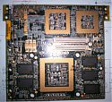
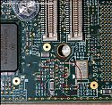
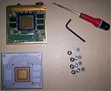
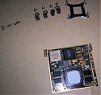

-
SGI O2 Overclocking : de R10K à R12K
Introduction
Passionné de machines SGI, j’ai la chance de posséder ce que je considère comme l’une des plus jolies stations Unix jamais créées, la SGI O2.
Petite, peu gourmande en énergie, dotée d’un hardware bien conçu et relativement performant pour une station qui représentait l’entrée de gamme chez Silicon Graphics, elle s’est plutôt bien vendu et on peut aujourd’hui en trouver très facilement, si l’on est prêt à y mettre le prix…
En effet, le marché de l’occasion étant ce qu’il est, les modèles les plus sympas, car les plus performants, ceux de la fin du cycle de commercialisation, les plus rares, car les moins vendus, se négocient parfois à des prix exorbitants.
Mais tout espoir n’est pas perdu pour le pauvre geek sans le sou.
A new hope
Lorsqu’on manque de puissance CPU, plusieurs solutions s’offrent à nous. Acheter un nouveau CPU plus puissant, mais généralement onéreux. Ou alors, tenter le diable en essayant de pousser celui que l’on a sous la main dans ses derniers retranchements (via notamment une augmentation sauvage de sa fréquence).
Dans le cas de l’O2, une troisième solution est possible: le recyclage.
On prend du vieux pas cher et l’on en fait du
neufmoins vieux.Ce que je propose, tout simplement transformer une O2 R10K 225/250 Mhz en O2 R12K 300 Mhz pour le prix d’un module CPU d’Octane, que l’on trouve aujourd’hui très facilement et pour presque rien.
Intéressé ? Et bien, allons-y.
The O2 strike back
Première chose à faire avant de partir la conquête de l’univers, s’assurer que l’on a les bonnes bases.
On ne s’intéressera ici qu‘à la quête de la puissance ultime. Si votre O2 n’est armé que d’un processeur R5K, il va falloir quand même investir un minimum. Si l’argent vous manque vraiment, il faudra oublier vos rêves de puissance, à moins que le passage de R5K180 Mhz à R5K200 Mhz suffise à combler vos attentes (voir ici).
Ce qu’il vous faut :
- Une O2 avec un processeur R10K225 ou R10K250
- Un module CPU d’Octane R12K270 ou R12K300
- Un tournevis cruciforme pas trop gros ni trop petit
- Une clé Allen de 5 mm
- De quoi souder à l‘étain
- Une bonne vue et des mains qui ne tremblent pas
Pour les processeurs, on peut en trouver assez facilement sur les divers sites de ventes. Pour les outils, c’est du très classique. En ce qui concerne le dernier point, en cas de soucis, j’ai bien peur que vous deviez faire appel à votre fidèle Wookiees.
Bon, maintenant que nous avons le matériel, passons à un peu de théorie.
Knowledge is power
C’est en parcourant le forum de nekochan que j’ai découvert un jour que l’on pouvait utiliser un processeur R12K sur un module CPU d’O2 R10K.
En effet, sauf pour le R12K400 Mhz, les processeurs d’O2 R10/12K ne sont pas soudés sur leurs cartes, mais simplement maintenus sur un slot par le radiateur.
Mieux encore, il existe une parfaite compatibilité des pins entre les R10K de génération 225 et 250 Mhz et les R12K 270 et 300 Mhz.
Ceci implique donc que l’on peut mettre un processeur R12K, prélevé dans un module CPU d’Octane par exemple, dans un module CPU d’O2 destiné à l’origine à un R10K. Si ce n’est pas beau ça.
Seul problème, notre pauvre CPU R12K va alors se retrouver à la même fréquence que son prédécesseur.
Il va donc falloir ramener celui-ci dans sa fréquence réelle en modifiant les caractéristiques de la carte CPU.
Suivant les cas, on va être amené à jouer avec 2 valeurs :
- Un coefficient multiplicateur (CM)
- La fréquence du SysClock
En effet, la fréquence du processeur est calculée suivant une formule simple : SysClock * CM.
Quelques exemples pour éclaircir tout cela :
CPU Type CPU Freq CM SysClock R10K 225 Mhz 2.5 90 Mhz R10K 250 Mhz 2.5 100 Mhz R12K 270 Mhz 3 90 Mhz R12K 300 Mhz 3 100 Mhz Cette table montre bien une chose : la manipulation ne sera pas la même suivant le module processeur de départ et celui d’arrivée.
Dans un cas, il suffira de modifier le coefficient, dans l’autre il faudra en plus overclocker le SysClock.
Welcome in the real world
Modification du coefficient
 Cette opération est la plus simple. La valeur du coefficient est déterminée par la position de résistances sur une extrémité de la carte CPU (voir encadré rouge sur l’image).
Pour passer de 2.5 à 3, il va falloir en bouger 2.
Voici un relevé des résistances sur 2 modules CPU de coefficient multiplicateur différent :
O2 R10K 225 Mhz
R508 R510 R514 R517 R523 R530 R534 R537 R540 R541 R544 R547 R548 R550 R552 R554 R556 R559O2 R12K 270 Mhz
R508 R510 R514 R517 R523 R530 R534 R538 R540 R541 R544 R547 R548 R550 R553 R554 R556 R559On voit clairement ici les 2 résistances à modifier. Il va falloir les déplacer de R537 à R538 et de R552 à R553.
Modification du SysClock
On peut là aussi modifier la fréquence du SysClock de 90 Mhz à 100 Mhz simplement en changeant de place 2 résistances.
L’opération est juste rendue plus délicate par la position de celles-ci sur la carte qui les rend plus difficiles à manipuler.

Au fil de mes bidouilles, je me suis aperçu qu’SGI avait changé le nom de ces résistances entre 2 générations de cartes CPU.Plutôt que de donner uniquement des noms, un membre de Sunwizard.net m’a gentiment fourni une photo haute résolution de la carte, à partir de laquelle j’ai réalisé le schéma ci-contre.
Celui montre les résistances dans la position finale (le Sysclock à 100 Mhz donc), avec la modification effectuée mise en relief par des flèches (sur cette carte, elles ont été déplacées de R644 à R646 et de R649 à R650).
I’m your father
Pour passer de la théorie à la pratique, quelques recommandations s’imposent.
Une carte CPU comme celle de l’O2 est très sensible aux décharges d‘électricité statique.
Il faut donc faire très attention en là manipulant, éviter de mettre ses doigts sur les composants et prendre soin de se décharger à la terre (via une prise de courant par exemple) si l’on ne possède pas de bracelet antistatique.
De plus, lorsqu’on démonte les radiateurs des modules, il arrive que de petites particules de métal se détachent au niveau des ressorts. Faire très attention à ne pas en laisser traîner sur la carte.
Enfin, on ne manipule pas des composants CMS comme on ressoude l’alimentation du grille-pain de tante Jeannine. Ceux-ci sont très petits, et demandent du doigté et un matériel correct pour les manipuler. Si l’on ne sait pas souder convenablement et vérifier les contacts, ne pas se lancer dans la manipulation seul au risque de tout casser.
Dans tous les cas, je ne serais aucunement responsable si un module CPU refuse de fonctionner après manipulation.
Just a little hack
Reste maintenant à détailler un peu comment effectuer la manipulation.
 On va commencer par démonter le module CPU de l’Octane, afin de récupérer le R12K qui sommeil en lui. Pour cela, il suffit de dévisser les 2 petites vis sur le côté du module, ainsi que les supports s’ils sont encore présents sous celui-ci avec un tournevis. Puis, ce sera au tour des 4 grosses vis qui maintiennent le radiateur avec l’aide de la clé Allen. Après avoir délicatement retiré celui-ci, le processeur sera clairement visible sur son socket, sauf, et là attention lorsque celui-ci reste collé par la patte thermique sur le radiateur !
On va ensuite s’attaquer à l’O2. La première chose à faire est de sortir le support de carte PCI. Pour cela, le plus simple (et le plus rapide) reste de retirer 3 vis de la façade, les 2 qui tiennent le support, ainsi que celle juste en dessous qui maintient un cache noir, de manière à pouvoir tordre un peu le plastique pour faire de la place pour le support.
 On a alors accès au module processeur. Pour l’extraire, il suffit de dévisser les 4 petites vis brillantes à ses extrémités, puis de tirer dessus délicatement.
Comme sur le module de l’octane, il reste à dévisser les 4 grosses vis du radiateur avec la clé Allen, et on a accès au processeur R10K.
Il suffit alors d‘échanger les 2 processeurs en respectant le détrompeur, et de remettre délicatement le radiateur en place.
À cette étape de la manipulation, on a un module CPU d’O2 R12K fonctionnel, mais avec une mauvaise fréquence.
Maintenant que le radiateur est en place, poser le module sur celui-ci, et effectuer les manipulations sur les résistances qui sont pour vous nécessaires.
Enfin, on remonte tout cela, en prenant bien soin de vérifier que l’on a rien oublié.
A new born
Au prochain redémarrage, si tout s’est bien passé, voici ce qu’on obtient :
CPU: MIPS R12000 Processor Chip Revision: 2.3 FPU: MIPS R12010 Floating Point Chip Revision: 0.0 1 300 MHZ IP32 Processor Main memory size: 1024 MbytesMême si elle est risquée, cette bidouille du module CPU vaut vraiment le coup, puisque l’on obtient en fin de compte pour un prix réduit un module R12K ayant les mêmes caractéristiques techniques que celui vendu par SGI.
Les performances sont donc au rendez-vous.
Avant :
CPU: MIPS R5000 300 MHZ Dhrystones : VAX MIPS rating = 379.343 Linpack : Unrolled Double Precision 44572 Kflops Whetstone : MWIPS 392.908Maintenant :
CPU: MIPS R12000 300 MHZ Dhrystones : VAX MIPS rating = 594.373 Linpack : Unrolled Double Precision 120207 Kflops Whetstone : MWIPS 732.340Le tout pour une quarantaine d’euros en ce qui me concerne (ayant déjà à disposition un module CPU d’octane, je n’ai acheté qu’une carte mère R10K225 pour l’O2).
Voilà, il ne me reste plus qu‘à souhaiter bonne chance à ceux qui tenteront la bidouille.
Quelques liens
forums.nekochan.net/viewtopic.php?f=3&t=2348&start=30
www.sunwizard.net/forum/viewtopic.php?t=2022
www.sunwizard.net/forum/viewtopic.php?t=2052Remerciements
Merci à chicago-joe, membre de Nekochan, grand maître vénéré de la bidouille SGI, sans qui rien de tout cela n’aurait été possible.
Merci aussi à BinusFr, membre de Sunwizard, d’avoir démonté son O2 juste pour quelques photospar Cédric TESSIER le 22/08/2007
{kind=link}
{kind=link}
{kind=link}
{kind=link}
{kind=link}